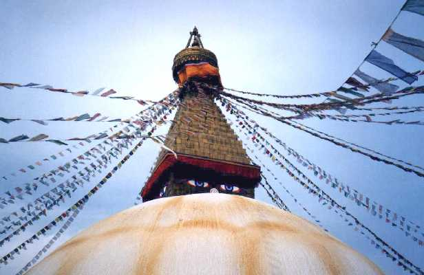
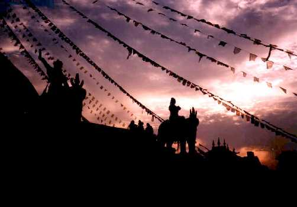
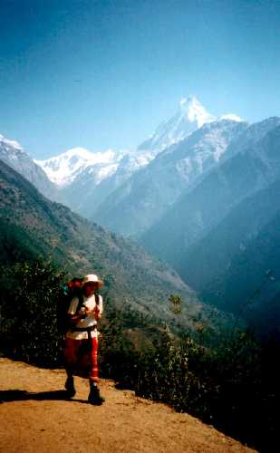
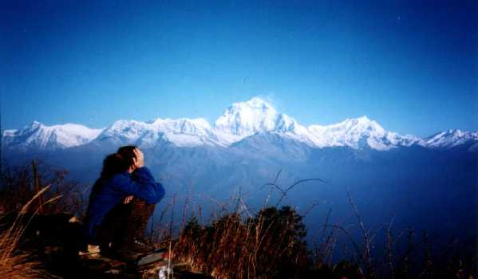
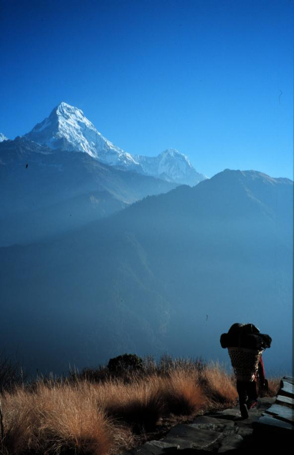

NEPAL
By Esra
Bayoglu
(February/March 1999)
Nepal'den doneli bir sure gecmesine ragmen, hala adaptasyon zorlugu
cekiyorum. Merhaba, hej, hi, Namaste, sozcukleri birbirine karismis durumda.
Tesekkur ederken ellerimi birbirine kavusturuyor, ruyalarimda hala Kathmandu'da
veya daglarda dolasip duruyorum.
Dunyanin 14 adet, 8000 metrenin uzerinde zirvesi var ve bunlardan
8 tanesi Nepal sinirlari icinde. Bir dagci olarak beni oraya ceken seyin
baslangicta ne oldugunu soylememe gerek yok heralde. Baslangicta diyorum
cunku gun gectikce duygularim ve gorduklerim beni daglardan ziyade ulkenin
kendisiyle, topragiyla, insaniyla icice olmaya itti. Dort hafta boyunca,
gitgide artan bir merakla yaklastim etrafima.
Yolculugumuz ozetle, Katmandu vadisi ve sehirleri, Pokhara vadisi, ve
Annapurna dag silsilesine dogru yapilan bir yuruyusten ibaretti. Ilginc
tesadufler ile tanistigimiz insanlar, guzel anilar ve de huznun bir arada
yasandigi dolu dolu bir dort hafta. Pierre'le beraber artilari ve eksileri
ile Nepal'i tanimaya calistik. Kacinilmaz olarak Tibet ve Hindistan'la
ilgili de bir cok sey ogrendik. Beni son derece etkilemis olan bu yolculuk
sonrasinda bir kac birsey karalamazsam kendimi suclu hissedecektim. Iste
bu bir kac seyi asagida bulabilirsiniz.
Ekonomi uzerine
Nepal oldukca fakir bir ulke. Tarim disinda hemen hic bir uretimi yok.
Hersey Hindistan'dan ithal ediliyor. Yanilmiyorsam tek elle tutulur gelir
kaynaklari turizm. Turistler yogun olarak trekking, rafting ve safari yapiyorlar.
Ulkenin guneyi kirac, kuzeyi ise daglarla kapli. Bu nedenle, halk, tarima
elverisli olan orta kisim vadilerinde yerlesmis.
Hayat sartlari cok zor Nepal'de. Rupi'nin durumu cok acikli. Bir ornek
vermek gerekirse, milletvekili maasi ikiyuz dolar, normal calisanlarin
maasi ise kat kat dusuk elbette. 1990'larin basinda sembolik bir kralligin
yanisira demokratik yonetime gecmisler ancak kisa surede sistem yozlasivermis.
Politikacilar ve burokratlar son derece zengin olmuslar. Yolsuzluk almis
basini gitmis. Hemen heryerde oldugu gibi iscilik onemini yitirmis.
Nepal dunyanin en cok fakirlik yardimi alan ulkesiymis, ayrica buyuk
de bir turizm geliri var. Ancak bu gelirler nereye gidiyor, bilinmez. Her
yil binlerce insanin odedigi 40 $ vizelerin, 10 $ trekking izinlerinin
ve 16$ ACAP (Annapurna koruma bolgesi projesi) giris ucretlerinin ulke
ve halk uzerinde hic bir olumlu etkisini gozlemleyemedim. Yollar hala bozuk,
insanlar hala cok fakir, erozyonun yiktigi koy okullari hala tamir bekliyor.
Sanirim Nepal'de turizm gelirleri akillica kullanilmiyor. ACAP'in kuruldugu
ilk yillarda cok isler yaptigi ama su anda kotu ve bozuk bir yonetimin
eline dustugu soylentileri var.
Hinduizm, Budizm ve Tapinaklar
Din
cok onemli Nepal'de. Insanlar cok dindarlar. Yalniz Hinduizm ve Budizm
o kadar icice girmis ki, ikisi arasinda pek ayrim yapmak guc. Tapinaklari
kurallari birbirinden farkli olmasina ragmen, ozellikle hindular Budizmi
kendi dinlerinin bir parcasi olarak kabul ediyorlar. Budizmin kurucusu
Buda'nin, kendi tanrilarindan birinin reenkarnasyonu olduguna inaniyorlar.
Hindu mabetlerine o dinden olmayanlar giremiyor ama Budist tapinaklari
herkese acik. Budizmin yuksek toleransini firsat blen turistler, tapinaklarin,
rahiplerin bile gitmeye cekindigi, en kutsal noktalarina kadar tirmaniyorlar.
Hindularda bir cok tanri var. Tanrilara sunularda bulunmak cok onemli.
Cok sik, basamakli, ahsap oymali tapinaklari var. Icine girmek yasak ama
basamaklarinda isterseniz, butun gun miskinlik yapabilirsiniz. Kat kat
olan catilarini tasiyici gorev goren ahsap payandalardaki ince ince oymalar
gercekten gormeye deger. Tapinak onlerinde sebze tezgahlari ile ihtiyar
teyzeler oturuyorlar, cocuklar basamaklarda kosturup duruyor butun gun.
Kathmandu'da, en cok hoslandigim seylerden biri, Durbar Meydani'ndaki tapinaklarin
tirmanabildigim en yuksek basamagina oturup, meydanda olup biteni seyretmekti.
Turistleri hic rahat birakmiyan flut, kilit, merhem ve biblo saticilarini,
trafigi, ve bunlardan tamamen bagimsiz guncel yasamindaki kalabaligin devinimini
seyretmek buyuk bir zevkti. Tabii bu arada bisikletli taksicileri de unutmamak
gerekiyor. Rickshaw adi verilen bu taksilere, uc-tekerlekli-fayton-bisiklet
demek cok yanlis olmaz heralde.
Kaldirimlarda, bazen de sokagin tam ortasinda, tastan hindu tapinaklari
da var, kucucuk. Tanrilara sunmak icin insanlar cicekler, renli (cogunlukla
kirmizi) tozlar, baharatlar ve pirinc getiriyorlar buralara. Ilk geldigimde
Katmandu'ya insanlarin saclarina, kulak arkalarina taktiklari cicekler
ve alinlarina surdukleri kirmizi boyalar dikkatimi cekmisti. Sonradan ogrenmis
oldum ne anlama geldiklerini. Sokaklarda yururken dikkat etmek, yere bakmak
gerekiyordu hep. Kaldirimlardaki, kapi onlerindeki Puca'larin uzerine basmak
olmaz tabii. Puca, ortasi kirmizi boyali yere cizilmis bir cember, kusal
bir yer, bir ibadet, her gun yenilenen bir sey.
Tapinaklardaki ahsap oymalarindan baska gozalici pencere oymalarini
anlatmamak olmaz. Binalar bakimsizliktan dokuluyor olsalar bile bu
guzelim el oymasi ahsap pencereler goruntuyu oyle guzellestiriyor ki. Kathmandu
vadisinin en guzel sehri olan Bhaktapur'daki binalar ve tavus kusu oymali
pencere gercekten gorulmeye deger.
Katmandu'da tanistigimiz Elif sagolsun, sayesinde biz de boluk porcuk
bir seyler ogrenebildik Budizm hakkinda. Ornegin Budizmin bes kurali oldugunu:
canli bir varligin canini almamak, dogru olmayani soylememek, zina yapmamak,
verilmeyeni almamak, alkol ve sigara filan kullanmamak.
Budist
tapinaklarina Stupa deniliyor. Yarim kure seklinde, uzeri kirecle bembeyaz
boyanmis, betondan yapilmis oldugunu tahmin ettigim bir kutle uzerine,
dort bir yanina Buda'nin gozlerinin cizilmis oldugu kubik bir yapi oturtulmus.
Onun uzerinde ise nirvanaya ulasmanin kademelerini simgeleyen basmaklar
yukseliyor. Basamaklarin en tepesinde, semsiyemsi bir seyin altindan dort
bir yana acilarak asilmis ipler uzerinde yuzlerce dua bayragi var. Inanisa
gore bu bayraklar uzerinde yazili olan dualar, ruzgarla etrafa tasinip
cok sevap kazandiriyorlar. Katmandu'da bir cok stupa var ama kocaman
olanlar en guzelleri. stupa'nin etrafinda yurumek busbutun sevap katiyormus
insanlara. Saat yonunde dualar okunarak veya dua silindirleri cevrilerek
yurunuyor. Bazi budistler ise secde hareketini andiran bir hareket ile
donuyorlar stupanin etrafini. Sayilar da cok onemli ne kadar yapilirsa
o kadar sevap. Tapinagin etrafinda tezgahlar uzerinde pirincten kandiller,
iclerinde tereyagi yaniyor. Tanrilara, Buda'ya kandil yakip dilek dileniyor.
Geceleri Stupa'nin etrafindaki kandiller yakildiginda cok guzel bir goruntu
cikiyor ortaya.
Rinposeler, manastirlari dolasip dersler veren Budist rahip-ogretmenler
(yanlisim varsa kusura bakmayin). Chokyi Nyima Rinposenin konusmasini
dinlemeye gittik Elif'le beraber. Son derece sessiz ve huzurlu bir
ortamda hepimiz halinin uzerinde bagdas kurmus bir sekilde 40 kadar yabanci
dinledik yasli Rinposeyi. Tibetceden ingilizceye simultane ceviri yapti
bir Alman budist. Oyle tatli tatli anlatti ki felsefesini icimi huzur kapladi
bir anda. Konusma sonunda bazi insanlar beyaz satenden bir atki sundular
hocaya, hoca da atkiyi boyunlarina asarak kabul etti sunuyu. Kata denilen
bu atki cok onemliymis Tibet kulturunde. Sahibi icin, ziyaret ettigi kisiye
ne kadar saygi duydugunun bir gostergesi. Herkes yaninda atkisi ile geliyor
boyle yerlere. Ama bunlar kati kurallar degil, budizmde bizim gibi sadece
merak edenlere karsi sonsuz bir hosgoru var.
Ilginc tesadufler ve insanlar
Yolculuga baslamadan once, Pierre'in bir arkadasinin kardesinin Katmandu'da
oldugunu ogrendik. Sehre vardiktan bir sure sonra iletisime gectik. Elif
ve Neil alti senedir Uzak Dogu'da, iki senedir de Nepal'de yasayan biri
Turk digeri Ingiliz bir cift. Bizi hemen bagirlarina basip, evlerinde misafir
ettiler. Cok sey paylastik ve ogrendik onlardan. Elif'le bol bol sohbet
edip turkcemin de pasini acmis oldum biraz.
Yolculugun ikinci suprizi Pokhara'da karsilastigimiz Pelin oldu.
Aylarca Cin'de kaldiktan sonra, yabancilara egitim veren Budist manastirlarinin
(Gompa) birinden aldigi sekreterlik-direktorluk teklifini kiramamis. Hedefledigi
Hindistan'a gidisi boylece 4 ay ertelenivermis. Stockholm'de yasayan (komsu
sayilir) Konyali Pelin tek basina geziyordu Asya'yi.
Boudhnath'a gidecegimiz gun Elif yaninda kirmizi entarisi icinde bir
rahiple cikageldi. Adi Tandin'mis cok efendi Bhutan'li bir rahip, hem de
cocuklugundan beri. Bhutan'da insanlar kendileri secmiyorlarmis rahip olmayi,
aileler manastira veriyorlarmis cocuklarini daha kucucukken. Gecen sene
Elif'in ingilizce sinifindaymis. O gun Tandin bizi kaldigi eve davet etti,
caylar ve biskuvilerle agirladilar bizi oda arkadasi ile. Bhutan'i anlattilar,
yasadiklari manastiri ve meditasyon yaparken oturdugu yerde oluveren ve
hala oturuyor olarak kalan basrahiplerini... Denizi hic gormemis Tandin'in
oda arkadasi, yanimda Turkiye'yi merak eden olursa diye gezdirdigim kartpostallardan
Olüdenizi cok begendi.
Tanistigimiz, Nepal'de yasamayi secmis insanlarin cogu siradisiydi.
Kimisi ogretmenlik yapiyordu. Kimisi gezmeye gelmis budist olmus yerlesmis.
Kimisi de ulkesine donerken ugramis sonra da trekking rehberine asik olup
evlenmis ve daha binbir cesit hikaye. Elif ile Neil de Tailand'da 4 yil
yasadiktan sonra Katmandu'ya yerlesmisler.
Daglar ve Trekking
Nepal ile Himalayalar hep birlikte anilir. 1950'lerde sinirlarini yabancilara
acmasiyla, dagcilarin ruyalarini susuleyen bu yuksek zirveler birer birer
tirmanilmis. Ama nedense en buyuk paye yabanci dagcilara cikartilmis. Biliniz
ki Nepal'de de cok iyi dagcilar var (cogunlukla Sherpalar) ustelik onlari
birer basamak olarak kullanan adini cok duydugumuz dagcilardan cok daha
fazla ovgu hakediyorlar.
Himalayalari
tariflemeye calisarak guzelliklerine golge dusurmek istemiyorum. Bu nedenle
daglara teget diger konulardan bahsedeyim biraz.
Trekking kelimesi beni nedense hep rahatsiz etmistir. Dagciligin sanina
trekking yapmayi yakistiramamisimdir hic. Trekkinng deyince, acentalara
yiginla paralar verip, ismarlama doga yuruyusu yapanlar gelir aklima hep.
Evet, iki hafta olarak planladigimiz doga yuruyusunun adi trekking! Onceden
belirlenmis rotalarda, saadece patikalari kullanarak yaptigimiz bir yuruyus.
Ama icim gene de rahat, cunku bu isi yapilabilecek en bagimsiz bicimde
yaptik: acentasiz, rehbersiz ve hamalsiz.
Bekledigimin aksine, kendi yukumuzu tasidigimiz, kamp yaptigimiz, rehber
kullanmadigimiz icin, gittigimiz heryerde oldukca tuhaf karsilandik. Hani
Turkiye'de koy yerine gidersiniz herkes uzun uzun sizi suzer (belki daha
cok sehirlerde kim bilir), cocuklar hemen halka olusturur ya etrafinizda,
gittigimiz dag koylerinde de ayni sey geldi basimiza, yalniz cok daha yogun
olarak. Hatta bu bos, uzun suzme olayina batililar bir isim bile takmislar
"Asya bakisi" (Asian stare). Birisi bana soyleyene kadar dikkatimi
bile cekmemisti. Bizim memleketten alisigim ne de olsa. Ozellikle kamp
yaptigimiz yererde hep trekking firmalari ile gelenler kaliyorlardi, yani
hamalli ascili ve rehberli guruplar. Bizim gibi yalniz basina yuruyus yapan
hic kimse kamp yapmiyordu. Oteller (lodge'lar) dururken kamp yapmak da
ne oluyor!
Lodge'lar genellikle aileler tarafindan isletiliyor. Buyuk cogunlukla
kadinlar ve sevimli cocuklar calisiyor. Kendileri de otelin bir kosesinde
kaldiklari icin, kendimizi aile ortaminda hissettigimiz zamanlar cok oldu.
Koyler cok guzel yerlere konuslanmislar. Dik yamaclara kurulu bu koylerde,
teraslandirma yapilarak tarima olanak saglanmis. Genellikle pirinc misir,
sebze ve bugday ekiyorlar. Ormanlar ise enfes, Himalayalar'da orman siniri
cok daha yuksek Turkiye'dekinden. Kit orman bilgimle gozlemleyebildigim
kadariyla cam, bambu, rhododendron, firn, mese, palamut ormanlari vardi.
Mart ayinin avantaji, butun agaclar ve yerler cicek acmislardi ve etrafa
inanilmaz guzellikte kokular yayiyorlardi. Annapurnalar'in, Dhaulagiri'nin
ve Machapuchare'nin yakindan nefes kesici goruntulerini ise yaziya dokmek
pek mumkun degil. Bir haftalik yuruyusumuz boyunca bu dev kutlelerin goruntusu
oylesine icime isledi ki su anda bile gozlerimi yumsam en ufak ayrintisina
kadar olusturabilirmisim gibi geliyor goruntuyu.
Iki hafta olarak planladigimiz bu yuruyusu Himalayalarin miknatis etkisi
yaratan muhtesem goruntusune ragmen, iki ayri vadiyi kaplayan kucuk bir
tur yaparak bi haftaya kisalttik.
Yuruyusu
neden mi kisa kestik?
Turizmin daglara ve daglilara neler yaptigini gorduk de ondan!
Rota boyunca butun koylerde, turistler icin Lodge'lar var. Bunlar,
isimleri "River view" ile "Mountain View" arasinda degisen, duslu, manzarali,
kucuk oteller. Ayrica cok sukur ki, sigara, bira, cola. fanta, snickers
ve pizza yoklugu da cekilmiyor. Zavalli katirlarin duse kalka yukariya
tasidiklari biralarin bos siseleri Lodge'larin arkasinda yiginlar halinde
depolaniyor ama nedense asagiya indirilmiyor. Pet siseleri ve diger copleri
ise orman iclerinde ve akarsu yataklarinda atilmis olarak gormek mumkun.
Yani daglarda kirlilik hat safhada. Kendi payimiza dusen gorevi, hic cop
birakmayarak, bira icmeyerek, kendi pet sisemizi Isvec'ten getirip, Isvec'e
geri goturerek biraz olsun yerine getirmeye calistiksa da, yedigimiz yemeklerle,
koylulerin odun (dolayisi ile ormanlarini) yakmalarina katkida bulunmus
oluyorduk.
Gerek erozyon, gerekse yakilmak icin agaclarin kesilmesi ciddi bir orman
kaybina sebep oluyor Nepal'de. Ormanlarlar kesilerek yeni otellere yer
aciliyor, otellerin isitilmasinda gene odun kullaniliyor. Kirlenmeden sonra
bana gore turisterin sebep oldugu ikinci yikim bu.
Tabii dahasi da var:
Turizmin yore insanin kulturune yaptigi kotulukten hic bahsetmek istemezdim
ama ugradigim hayal kirikligi ve saskinligi hala uzerimden atabilmis degilim.
Hayal kirikligi diyorum cunku beklentilerim cok daha farkli idi. Sade koyleri,
koyluleri, dogal koy yasantilarini gorup yasayabilecegimi sanarak masumca
bir yanilgiya kapilmisim meger. Dunyanin heryerinde oldugu gibi, Nepal'de
de turizm yapacagini yapmis, turist parasi pesinde, acikgoz insanlarin
on plana cikmasina sebep olmus. Aileler cocuklarina yurumeyi ogrendikten
sonra, turistlerden nasil para seker ve kalem isteyeceklerini ogretir olmuslar.
Buyuklerle ise sohbet etmek pek mumkun degil. Her selamlasmanin ardindan
ya birsey satmaya calisiyorlar, ya da otellerine veya lokantalarina
cekmeye.
Nedense yerliler, gelen turisterin, halki, geleneklerini, yemeklerini,
koy yasantilarini gormek ve tanimak isteyebileceklerini akillarina getirmiyorlar.
Ya da gelen turistlerin cogunlugu gercekten bunlara ilgi gostermiyor. Son
model kameralari ile gelip bir kac dag ve gunes dogusu cektikten sonra
evine donen turistler cogunlukta belkide, kimbilir. Nepalliler her yerde
turistlerin hosuna gidecegini dusundukleri seyleri sunmaya calisiyorlar.
Bati yemekleri. cola, bira, pastalar, ornegin Pokhara'da butun lokantalarda
bati muzikleri, aksamlari gosterimde olan Holywood filimleri, internet
kafeler aklima ilk gelenler.
Yuruyusu kisa kesmemin bir baska sebebi ise, hamallari ve rehberleri
ile kolonist havalarindan kurtulamamis batililari daha fazla gormek istemememdi.
Nepalliler ve yasantilari uzerine gozlemler
 Namaste!
Nepal'deki anahtar sozcuk. Merhaba, gule gule, tesekkur ederim, buyrun,
kolay gelsin abi ve benzeri bircok anlama geliyor. Tek ogrendigimiz kelime
bu idi. Ne yazik ki Nepal dilini ve alfebesini kurcalayacak kadar azimli
olamadik bu dort hafta boyunca.
Namaste!
Nepal'deki anahtar sozcuk. Merhaba, gule gule, tesekkur ederim, buyrun,
kolay gelsin abi ve benzeri bircok anlama geliyor. Tek ogrendigimiz kelime
bu idi. Ne yazik ki Nepal dilini ve alfebesini kurcalayacak kadar azimli
olamadik bu dort hafta boyunca.
Kirmizi Nepal'de en cok sevilen renk. Sokaklarda, heryerde en cok kirmizi
var. Kadinlar evlendikten sonra nerdeyse hep kirmizi giyiyorlar, evli olmayanlar
ise giyemiyorlar. Nepal'de "Kadinlar Bayrami" diye bir olaydan sozetmisti
Elif. Vadinin butun kadinlari kirmizi sarilerini giyip kutsal sayilan Bagmati
nehri kenarindaki Pashupatinath'da toplaniyorlarmis. Pashupatinath, hindularin
en kutsal tapinaklarindan biri. Normal zamanda Hindistan'dan bile insanlar
burayi ziyarete geliyorlarmis.
Kadinlar pek hos giyiniyorlar, isil isil, rengarenk sarilerinin altina
daracik, gobek ve sirtlarinin bir bolumunu acikta birakan yarim bluzlar
giyiyorlar. Gobek ayip sayilmiyormus burada, hatta sirt gogus de cinsel
degil. Amma ve lakin bacak tam bir tabu! O yuzden kadinlar bacak hatlarini
gostermemeye cabaliyorlar. (sehrin gobegindeki geleneksel giysilerini terk
etmis olanlar disinda) Yada bolca bir pantolon uzerine dize kadar elbise
geciriyorlar. Gene evli olan kadinlarin iki kaslarinin ortasinda kirmizi
bir benek (sanirim "bindi" deniliyor) ve boyunlarinda da isiltili boncuklardan
guzel kolyeler gormek mumkun. Ayrilirken Elif bana kendi kolyesini verdi.
Boynumda onunla dondum Isvec'e ve bir sure de hep boynumda tuttum kolye
takmaya hic alisik olmamama ragmen. Nepal'in anisini daha canli yasatmak
istedim belkide. Tibetli evli kadinlar ise elbiselerinin uzerine enine
cizgili bir onluk takiyorlar, renkli hos gorunumlu bir onluk. Kadinlarin
simsiyah upuzun saclari hep topuz ya da orgulu. Kisa sacli kadin
(Bhutanli budist rahibeler disinda) hic gormedim. Bazen nehir kiyisinda
yikanan kadinlarin o isil isil upuzun saclarini gorunce bakmadan edemiyordum.
Ama ayip birsey yikanana bakmak. Nepal'de herkesin acikta yikanma ozgurlugu
var. Yol kenarinda ustu ciplak , su dokunen insan gorulebilir her an, bu
kisilere bakmamak ve rahatsiz etmemek ise yoldan gecenin kisisel sorumlulugu.
Gercekten cok dogal birsey bu Nepal'de ve ben ne zaman birisini ortalikta
yikanirken gorsem aklima hep bizim insanimiz geldi ve sadece kadin olmanin
rontgenlenmeye yettigi bir ulkenin kadini oldugumu hatirladim.
Aksamlari erkenden yatiyor Nepalliler, sabahlari da gun agarmadan kalkip
islerine koyuluyorlar. Aksam sekizden sonra sokaklar bos ve sessiz, ama
guvenli hissediyor insan kendini butun o karanlik ve issizliga ragmen.
Nepalliler bizden bambaska bir takvim kullaniyorlar yanilmiyorsam onlar
2050'li yillardalar su anda.
Nepal televizyonu aksamlari yayin yapiyor ve Nepal, Hint ve Pakistan
dizileri ve filimleri yayinliyor, gercekten gorulmeye deger Hint filimleri.
Bastan sona inanilmaz danslar ve kostumleri ile sarkilardan olusuyor. Nepal'in
o asya asya havasini solurken, hipnoz etkisi yaratti bu filimler bende
nedense. Hintce ve Nepalce birbirlerine cok yakin oldugu icin filimleri
anlamakta gucluk cekmiyorlar.

Milli yemegi "Dal Bhat" Nepal'in. Pilav mercimek corbasi ve acili ispanaktan
ibaret. Turistler icin cok sulandirilmis versiyonlari var ama yerlilerin
gittigi lokantalarda cok aci. Tabii ki denedik ve agzimizdaki alevleri
sondurebilmek icin kase kase yogurt yemek zorunda kaldik. Sanirim buralarda
gercek ev yemekleri yiyebilmek icin insanin baharat esiginin cok yuksek
olmasi gerekiyor. Tibetlilerin ozel yemegi ise Momo, yani Tibet mantisi,
cok lezzetli birsey anlatmakla olmaz. Burada (Isvec'te) hasretini cektigim
turk yemekleri listesine girecek kadar guzeldi Momo.
Seyyar kuscular gordum Katmandu'da. Evde bakmak icin alinabilecegi gibi
sirf azat etmek icin de kuslar satiyorlar. Parmak kadar minnacik kirmizi
gagali kuslar, hepsi cok sevimli. Hayvanlar heryerdeler zaten, sokaklar
ineklerin ve kopeklerin hakimiyetinde, tapinaklar ise maymunlarin. Canlilari
oldurmek Nepallilere yasak. Maymun ve inek gibi bircok hayvan da kutsal
sayiliyor. Et yiyorlar yemesine ama kasaplik islerini musluman azinliga
yaptiriyorlar.
Burada suyu kaynatmadan icmek mumkun degil. Sebzeleri de once iyotlu
suya yatirmak gerekiyor. Yoksa yoresel bakterilere alisik olmayan vucut
cok hasta dusebiliyor. Bulasici hastaliklardan korunmak icin de bunu yapmak
sart. Lokantalarda su icmek cok tehlikeli ama cay ve kahve serbest.
Trafik soldan akiyor. Hic bir yerde trafik lambasi veya isareti olmadigi
icin kavsaklar busbutun bir karmasa halinde. Pek az yaya kaldirimi olmasindan
dolayi yayalar da hep yollardalar. Ancak mucizevi bir sekilde, trafik rahatlikla
akiyor. Kimseye carpmamaya dikkat etmek ve hic durmadan korna calarak cevredekileri
uyarmak yeterli. Nepal'de de ayni Turkiye'deki gibi bir dolmus sistemi
var. Ama, sofor kabini yolcularin oturdugu arka kasadan ayri oldugu icin,
inmek istendiginde tavani yumruklamak gerekiyor.
Saglicakla kalin...